Algorithmen (Kreuztabelle)
CrossTabs-Algorithm
Kreuztabellen werden auch als Kontingenztabellen bezeichnet. Dieses Hilfsmittel wird verwendet, um das Vorhandensein bzw. die Stärke der Assoziation zwischen Variablen zu untersuchen.
Kreuztabellenmethode
- Häufigkeitszählung
- Rand und Zelle
- Tabelle der Chi-Quadrat-Tests
- Tabelle von Fishers Exaktem Test (nur 2 x 2)
- Assoziationsmaße
- Übereinstimmungsmaße
- Quotenverhältnis und Relatives Risiko (nur 2 x 2)
- Cochran-Mantel-Haenszel
Häufigkeitszählung
Definieren
-
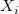
sind eindeutige Werte der Zeilenvariable in aufsteigender Reihenfolge, d.h. 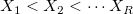
-
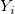
sind eindeutige Werte der Spaltenvariable in aufsteigender Reihenfolge, d.h. 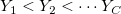
-
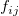
ist die Häufigkeit in Bezug zur Zelle 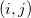
-
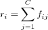
ist die Teilsumme der /math-865c0c0b4ab0e063e5caa3387c1a8741.png "i") ten Zeile
ten Zeile -
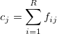
ist die Teilsumme der 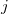
ten Spalte -
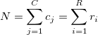
ist die Gesamtanzahl.
Rand und Zelle
| Statistik |
Formel und Erklärung |
| Anzahl |
|
| Erwartete Anzahl |
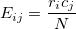 |
| Prozent Zeile |
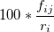 |
| Prozent Spalte |
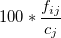 |
| Prozent gesamt |
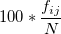 |
| Residuum |
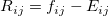 |
| Std. Residuum |
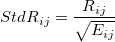 |
| Kor. Residuum |
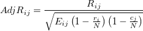 |
Chi-Quadrat-Statistik
| Statistik |
Formel und Erklärung |
Freiheitsgrade |
| Pearsons Chi-Quadrat |
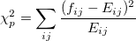 |
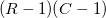 |
| Likelihood-Verhältnis |
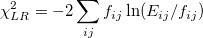 |
|
| Lineare Assoziation |
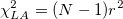 , wobei der Korrelationskoeffizient nach Pearson ist. |
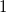 |
| Kontinuitätskorrektur |
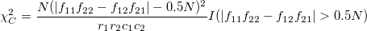 0.5N)" alt="\chi_C^2 = \frac{N(|f_{11}f_{22}-f_{12}f_{21}|-0.5N)^2}{r_1r_2c_1c_2} I(|f_{11}f_{22}-f_{12}f_{21}|>0.5N)" class="tex"/>, das nur für 2 x 2-Tabellen berechnet wird. |
|
Fishers Exakter Test
Dieser Test ist nützlich, wenn eine erwartete Zellenanzahl gering ist (weniger als 5). Er wird nur für 2 x 2-Tabellen berechnet. Angenommen, Sie haben folgende Tabelle:
|
|
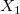 |
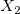 |
Teilsumme/Summe |
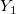 |
/math-6c773b2b7798e5713845e475d0c4b4c7.png "n_1") |
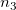 |
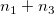 |
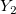 |
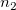 |
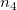 |
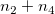 |
| Teilsumme/Summe |
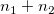 |
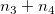 |
/math-8d9c307cb7f3c4a32822a51922d1ceaa.png "N") |
Unter der Nullhypothese (Unabhängigkeit) ist die Anzahl der ersten Zelle
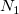
eine hypergeometrische Verteilung mit einer Wahrscheinlichkeit gegeben mit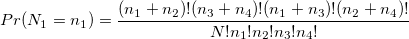
, 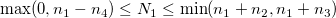
.
Einseitiger Test
Das Signifikanzniveau des einseitigen Tests wird berechnet mit
- p(left-sided test) =
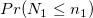
- p(right-sided test) =
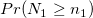
Zweiseitiger Test
Die zweiseitige Signifikanz ist
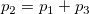
wobei
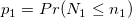
, wenn 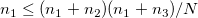
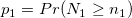
, wenn 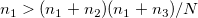
(n_{1}+n_{2})(n_{1}+n_{3})/N" alt="n_{1}>(n_{1}+n_{2})(n_{1}+n_{3})/N" class="tex"/>
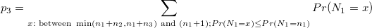
Assoziationsmaße
Definieren
-
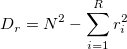
-
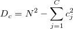
-
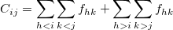
i}\sum_{k>j}f_{hk}" alt="C_{ij} = \sum_{hi}\sum_{k>j}f_{hk}" class="tex"/> -
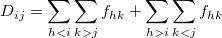
j}f_{hk}+\sum_{h>i}\sum_{k -
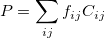
-
- ist die Teilsumme der ten Zeile
- ist die Teilsumme der ten Spalte
- ist die Gesamtanzahl.
| Statistik |
Formel und Erklärung |
Standardfehler |
| Phi-Koeffizient |
, das nicht für 2 x 2-Tabellen berechnet wird. Für eine 2 x 2-Tabelle ist er gleich Der Wert reicht von , wobei ,
|
|
| Cramérs V |
|
|
| Kontingenzkoeffizient |
|
|
| Gamma |
|
|
| Kendall |
Tau-b |
|
|
| Tau-c |
, wobei |
|
| Somers D |
CR |
|
|
| RC |
|
|
| Symmetrisch |
|
|
| Lambda |
CR |
, wobei die größte Anzahl in der i-ten Zeile ist und die größte Spaltenteilsumme. |
,
wobei der Spaltenindex von ist und der Index der Spaltenteilsumme für .
|
| RC |
, wobei die größte Anzahl in der j-ten Spalte ist und die größte Zeilenteilsumme.
|
,
wobei der Zeilenindex von ist und /math-8ce4b16b22b58894aa86c421e8759df3.png "k") der Index der Zeilenteilsumme für . der Index der Zeilenteilsumme für .
|
| Symmetrisch |
|
wobei , , und .
|
| Unsicherheit |
CR |
, wobei und und |
, wobei |
| RC |
|
|
| Symmetrisch |
|
|
Übereinstimmungsmaße
Diese Tabelle wird nur berechnet, wenn zwei Bedingungen erfüllt sind: (1) quadratische Tabelle, d.h. , und (2) die Zeilenvariable und die Spaltenvariable die gleichen Werte haben.
Die Kappa-Statistik wird berechnet mit:
Der Standardfehler wird geschätzt mit:
- .
wobei , ,
und .
Der entsprechende asymptotische Standardfehler unter der Nullhypothese ist gegeben mit
Eine weitere verwandte Statistik ist Bowker, die verwendet wird, um für alle Paare zu testen. Wenn 2" alt="R>2" class="tex"/>, wird die Statistik berechnet als
Für größere Samples ist die asymptotische Chi-Quadrat-Verteilung mit dem Freiheitsgrad .
Beachten Sie, dass Bowkers Test für 2 x 2-Tabellen gleich McNemars Test ist. Daher wird hier nur Bowkers Test gezeigt.
Quotenverhältnis und Relatives Risiko
Diese Statistik wird nur für 2 x 2-Tabellen berechnet.
Quotenverhältnis
Das Quotenverhältnis wird berechnet mit
Relatives Risiko
Die relativen Risiken sind gegeben mit
-
-
-
-
Cochran-Mantel-Haenszel
Definieren
- ist die Anzahl der Layer
- ist die Häufigkeit in der i-ten Zeile, j-ten Spalte und im k-ten Layer
- ist die j-te Spalte, Teilsumme des k-ten Layers
- ist die i-te Zeile, Teilsumme des k-ten Layers
- ist die Teilsumme des k-ten Layers
- ist die erwartete Häufigkeit in der i-ten Zeile, j-ten Spalte und im k-ten Layerzelle
-
Mantel-Haenszel-Statistik
Die Mantel-Haenszel-Statistik ist gegeben mit
wobei sgn die Vorzeichenfunktion 0)-I(x<0)+0*I(x=0)" alt="sgn(x) = I(x>0)-I(x<0)+0*I(x=0)" class="tex"/> ist.
Breslow-Day-Statistik
Die Breslow-Day-Statistik ist
wobei .
Tarones Statistik
Tarones Statistik ist
wobei .
Allgemeines Quotenverhältnis
Für eine 2×2×K-Tabelle ist das Quotenverhältnis beim k-ten Layer . Angenommen, dass das wahre allgemeine Quotenverhältnis existiert, das lautet, dann ist Mantel-Haenszels Schätzer des allgemeinen Quotenverhältnisses
Die asymptotische Varianz für ist:
![\hat Var[ln(\hat OR_{MH})]=\frac{\sum_{k=1}^{K}\frac{(f_{11k}+f_{22k})f_{11k} f_{22k}}{n_{k}^2}}{2\sum_{k=1}^{K}\frac{f_{11k} f_{22k}}{n_{k}}}+\frac{\sum_{k=1}^{K}\frac{(f_{11k}+f_{22k})f_{12k} f_{21k}+(f_{12k}+f_{21k})f_{11k} f_{22k}}{n_{k}^2}}{2\sum_{k=1}^{K}\frac{f_{11k} f_{22k}}{n_{k}}\sum_{k=1}^{K}\frac{f_{12k} f_{21k}}{n_{k}}}+\frac{\sum_{k=1}^{K}\frac{(f_{12k}+f_{21k})f_{12k} f_{21k}}{n_{k}^2}}{2\sum_{k=1}^{K}\frac{f_{12k} f_{21k}}{n_{k}}}](../images/Algorithm(CrossTabs)/math-fe6d99fcba77f28d2e62c52d30d014f4.png "\hat Var[ln(\hat OR_{MH})]=\frac{\sum_{k=1}^{K}\frac{(f_{11k}+f_{22k})f_{11k} f_{22k}}{n_{k}^2}}{2\sum_{k=1}^{K}\frac{f_{11k} f_{22k}}{n_{k}}}+\frac{\sum_{k=1}^{K}\frac{(f_{11k}+f_{22k})f_{12k} f_{21k}+(f_{12k}+f_{21k})f_{11k} f_{22k}}{n_{k}^2}}{2\sum_{k=1}^{K}\frac{f_{11k} f_{22k}}{n_{k}}\sum_{k=1}^{K}\frac{f_{12k} f_{21k}}{n_{k}}}+\frac{\sum_{k=1}^{K}\frac{(f_{12k}+f_{21k})f_{12k} f_{21k}}{n_{k}^2}}{2\sum_{k=1}^{K}\frac{f_{12k} f_{21k}}{n_{k}}}")
Die untere Konfidenzgrenze (UEG) und obere Konfidenzgrenze (OEG) für sind:
- und